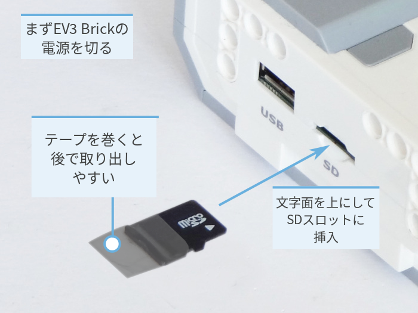
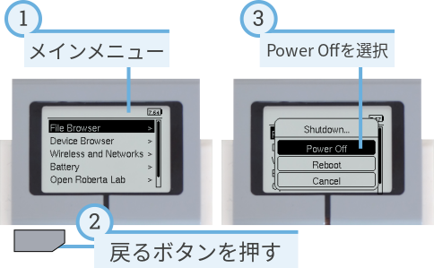
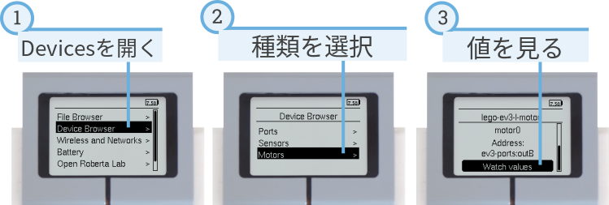
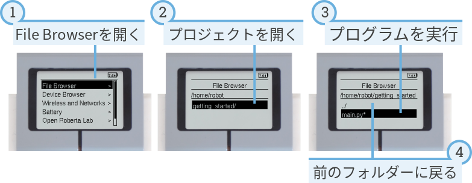

EV3 Brickを使う¶
EV3 Brickの電源が切れていることを確認してください。準備したmicroSDカードを、 図4のようにEV3 BrickのmicroSDカードスロットに挿入します。

図4 書き込み済みのmicroSDカードをEV3 Brickに挿入する
EV3 Brickの電源オン/オフ¶
中央の濃いグレーのボタンを押して、EV3 Brickの電源を入れます。
起動には数分かかることがあります。起動中、EV3 Brickのステータスライトが オレンジ色に点滅し、EV3の画面に大量のテキストが表示されます。 ステータスライトが緑色になれば、EV3 Brickは使用できる状態です。
EV3 Brickの電源を切るには、戻るボタンでシャットダウンメニューを開き、 中央ボタンでPower Offを選択します(図5)。

図5 EV3 Brickの電源を切る
モーターとセンサーの値を見る¶
プログラムを実行していないときは、図6のように device browserでモーターとセンサーの値を確認できます。

図6 モーターとセンサーの値を見る
コンピューターなしでプログラムを実行する¶
以前にダウンロードしたプログラムは、EV3 Brickから直接実行できます。
EV3画面のfile browserでプログラムを見つけ、中央ボタンを押すと、 図7のようにプログラムが起動します。

図7 EV3 Brickのボタンを使ってプログラムを起動する
元のファームウェアに戻す¶
いつでもLEGO®ファームウェアとLEGOプログラムに戻すことができます。 手順は次のとおりです。
- 上記の手順でEV3 Brickの電源を切ります。
- 画面とBrickのステータスライトが消えるまで待ちます。
- microSDカードを取り出します。
- EV3の電源を入れます。